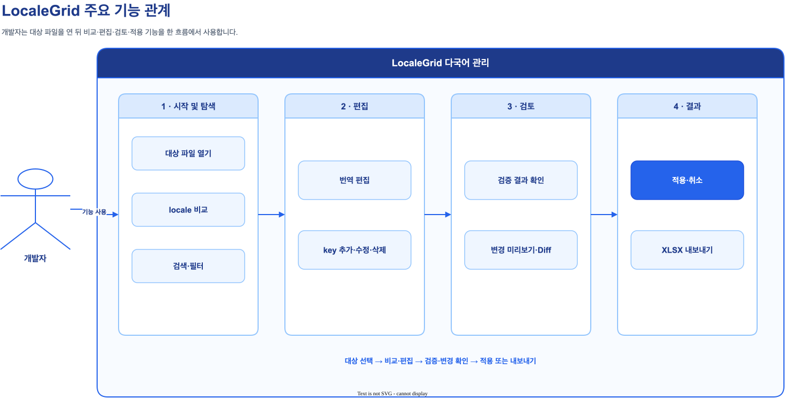
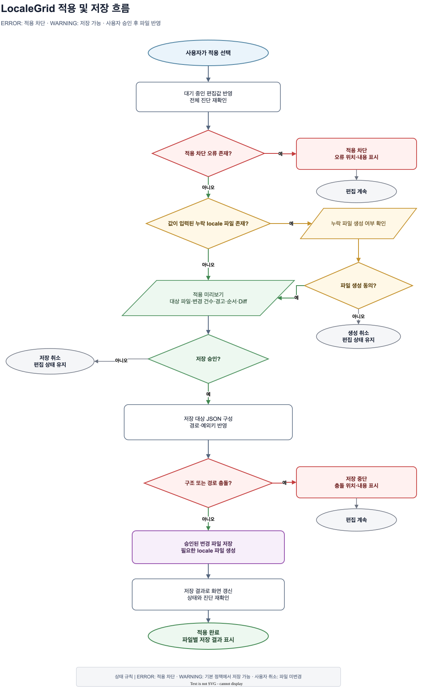
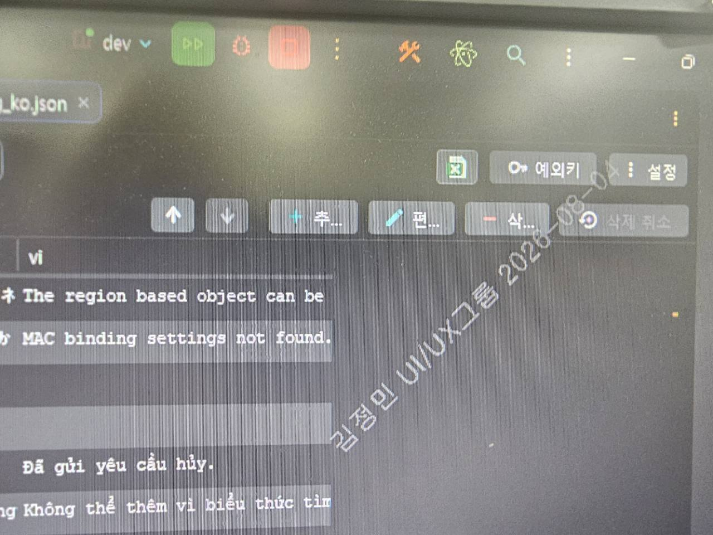

Development Deliverable Report
LocaleGrid
개발 산출 보고서
PyCharm 안에서 locale별 JSON을 비교·편집·검증·적용하는 통합 다국어 편집 플러그인
프로젝트 주요 기능
다국어 JSON의 비교부터 검증·적용까지 PyCharm 안의 단일 편집 흐름으로 제공.
기존 방식과 LocaleGrid 적용 방식 비교
분리된 locale 파일의 작성·검토 절차를 통합 그리드 중심 흐름으로 전환.
1.1 프로젝트 개요
개발 배경
언어별로 분리된 메시지 파일: messages_ko.json, messages_en.json 또는 locales/ko/login.json, locales/en/login.json
기존 JSON 편집기는 단일 파일 중심. locale별 동일 key 비교, 누락 확인, 변경 영향 검토는 수동 작업.
개발 목적
같은 category의 JSON을 key 기준으로 통합. locale별 번역을 한 화면에서 비교·수정.
저장 전 누락·구조·문자 체계 진단. 적용 전 영향 파일과 Diff 확인.
1.2 다국어 작성 흐름 비교

| 업무 단계 | 기존 작성 방식 | LocaleGrid 적용 방식 |
|---|---|---|
| 파일 열기 | ko·en·ja·vi 파일을 각각 열고 반복 전환 | 대상 JSON 하나를 열어 같은 category의 locale 자동 연결 |
| key 비교 | 파일별 key 목록을 직접 대조 | 전체 key 합집합을 한 표에 표시 |
| 번역 작성 | 각 파일에서 동일 key 위치를 찾아 개별 수정 | 선택 행의 locale별 값을 상세 패널에서 연속 편집 |
| 누락·오류 확인 | 빈 값, 누락 key, 구조 오류를 육안 검토 | 상태 배지, 셀 경고, 오류 툴팁으로 원인 확인 |
| 변경 검토 | 수정 파일과 변경 범위를 직접 확인 | 영향 파일, 변경 건수, 파일별 Diff 미리보기 |
| 저장·공유 | 각 JSON 저장 후 별도 자료 작성 | 검증 후 일괄 적용 또는 현재 화면을 XLSX로 출력 |
작업 규모 예시
비교 대상은 key 수 × locale 수만큼 증가. 500개 key와 4개 locale은 2,000개 번역 셀에 해당.
1.3 지원 파일 구조
| 항목 | 설정값 | 설명 |
|---|---|---|
| 기본 패턴 | locales/{locale}/{category}.json | 폴더명으로 locale 결정 |
| 대체 패턴 | locales/{locale}/{category}_{locale}.json | suffix와 폴더 locale 일치 필요 |
| 기본 locale 순서 | ko → en → ja → vi → 나머지 | 수동 순서가 없을 때 적용 |
다국어 편집 기능의 동작 구조
파일 인식에서 비교·편집·검증·저장까지의 흐름을 사용자 기능 기준으로 구성.
2.1 주요 기능 관계도
개발자 한 명의 작업 흐름을 기준으로 주요 기능과 연결 관계를 표현.

2.2 변경 적용 흐름
검증 오류는 저장 전에 차단. 정상 변경은 미리보기와 승인 후 프로젝트 JSON에 반영.

오류가 있는 경우
오류 위치와 사유 확인 후 편집 화면으로 복귀.
검증을 통과한 경우
영향 파일과 Diff 검토 후 JSON 저장.
2.3 기능별 처리 구조
내부 클래스명이 아닌 사용자가 인식하는 기능 단위로 처리 영역을 구분.

| 기능 영역 | 사용자 화면·동작 | 처리 결과 |
|---|---|---|
| 대상 파일 인식 | JSON 열기, locale 경로 설정 | 같은 category의 locale 파일 연결 |
| 통합 비교 | key·locale 그리드 | 전체 key와 locale별 번역 표시 |
| 검색·편집 | 검색, key 작업, 상세 입력, 순서 이동 | 미적용 변경 상태 생성 |
| 검증·상태 | 경고·에러 배지와 툴팁 | 저장 가능 여부와 원인 표시 |
| 미리보기·적용 | 영향 파일, 변경 건수, Diff | 승인 후 JSON 저장 |
| 출력 | 표시 행·열 선택, Excel 버튼 | XLSX 파일 생성 |
대상 인식부터 파일 적용까지의 기능 구성
주요 기능별 화면 구성과 사용 흐름.
3.1 다국어 파일 대상 지정
자동 인식대상: 설정된 locale 루트 바로 아래의 JSON. 편집기: JSON 원본 탭과 다국어 에디터 탭.
category: login
동일 category의 sibling locale 파일 로드
동작 흐름
locales/ko/login.json열기- 다국어 에디터 탭 선택
- 동일 category의 locale 열 확인
{category}.json, {category}_{locale}.json비대상: 루트 밖 JSON, suffix 불일치, JSON 이외 형식
3.2 JSON 파일 에디터
이중 에디터화면 구성: 필터·검색, 열/행 작업, 그리드, 상세 편집, 적용·취소. 변경 보호: 탭 이동·닫기 전 확인.
| 상태 | key | ko | en | ja | vi |
|---|---|---|---|---|---|
| 편집 | login.title | 로그인 | Sign in | ログイン | Đăng nhập |
| 경고 | login.help | 도움말 | 누락 | ヘルプ | Trợ giúp |
변경 중 이동 시 동작
- 값 수정 후 탭명의 (편집중) 표시 확인
- JSON 탭 이동 시 미반영 변경 안내
- 파일 닫기 시 닫기·계속 편집 선택
- 취소 승인 시 원본 JSON 재로드
3.3 키 추가·수정·삭제
단건 CRUDkey 작업: dot path 추가, 이름 변경, 삭제, 삭제 취소. 기존 행은 적용 전까지 삭제 후보로 유지.
행 추가
동작 흐름
- 추가 선택 후 key 입력
- 하단 상세 패널에서 locale 값 입력
- 편집 팝업에서 key 이름 변경
- 삭제 또는 삭제 취소 선택
.a, a., a..b, 중복, leaf/object 충돌미지원: 벌크 추가, 다중 value 편집, 템플릿 복제
3.4 검색 필터·하이라이트·검색 대상 이동
순환 탐색검색 범위: key와 모든 locale 값. 결과 표시: 대소문자 구분 없이 일치 문자열 강조.
| 상태 | key | ko | en |
|---|---|---|---|
| login.title | 로그인 | Sign in | |
| 편집 | login.button | 로그인하기 | Continue |
| menu.help | 도움말 | Help |
동작 흐름
- 검색어 입력
- 500ms 후 일치 텍스트 강조 확인
- 이전·다음으로 결과 순환
- 필요 시 검색 결과만 보기 선택
3.5 예외키 관리
위치 보존예외키: __section__ 같은 root-level 설명 entry. 원본 위치·값 보존, 적용 후 일반 번역 행에서 숨김.
예외키 설정
| 상태 | key | ko | en |
|---|---|---|---|
| __section__ | 로그인 영역 | Login section |
동작 흐름
- 예외키 버튼 열기
- 쉼표 구분 목록 저장
- 새 예외키 행 추가 후 값 입력
- 적용 후 JSON root 위치와 값 확인
3.6 드래그·버튼 이동
원본 순서 중심이동 방식: 위·아래 버튼 또는 6-dot 핸들. 같은 top-level 안에서는 행 단위, 그룹 사이에서는 최상위 그룹 단위 이동.
| 핸들 | key | ko |
|---|---|---|
| ⠿ | login.title | 로그인 |
| ⠿ | login.button | 계속 |
| ⠿ | menu.title | 메뉴 |
동작 흐름
- 상태 필터와 결과만 보기 해제
- 같은 그룹에서 행을 위·아래로 이동
- 다른 그룹 경계로 드래그
- 적용 미리보기에서 순서 변경 확인
3.7 상태 정의
배지·툴팁·스크롤맵상태 정보: 추가·편집·삭제·경고·에러. 셀 툴팁에는 key·locale·진단 사유, 스크롤맵에는 상태 위치 표시.
| 상태 | key | ko | en |
|---|---|---|---|
| 추가 | login.new | 새 기능 | New |
| 편집 경고 | login.help | 도움말 | 누락 |
| 에러 | login | dot path 충돌 | |
번역 값이 비어 있습니다.
상태 정의
- 추가: 적용 시 새로 기록할 행
- 편집: key 또는 값이 변경된 행
- 삭제: 적용 시 제거할 기존 행
- 경고: 확인이 필요하지만 기본 정책에서 저장 가능한 진단
- 에러: 적용을 차단하는 진단
3.8 부적격 언어 보조 진단
예상 문자 체계 검사검출 기준: locale별 예상 Unicode Script. 표시 정보: 위반 문자와 locale. 자연어 의미 판별은 미지원.
| 상태 | key | ko | ja |
|---|---|---|---|
| 경고 | login.title | ログイン 안내 | ログイン Guide |
허용 범위 밖 문자: ロ グ イ ン
동작 흐름
- ko 값에 일본어 문자 입력
- 해당 셀의 경고와 툴팁 확인
- 설정에서 처리 수준을 ERROR로 변경
- 같은 위반의 적용 차단 확인
| locale | 명시 허용 Script | 대표 진단 예 |
|---|---|---|
| ko | Hangul + Latin + Common + Inherited | 일본어 Kana, Cyrillic 등 |
| en | Latin + Common + Inherited | Hangul, Kana, Cyrillic 등 |
| ja | Hiragana + Katakana + Han + Latin + Common + Inherited | Hangul, Cyrillic 등 |
| vi | Latin + Common + Inherited | Hangul, Kana, Cyrillic 등 |
| 기타 | BCP 47 명시 Script 또는 CLDR likely-subtags 예상 Script + Latin/Common/Inherited | 결정된 Script 밖 문자 |
3.9 누락키 검출
저장 가능 경고누락 기준: 전체 locale의 key 합집합. 특정 locale의 key 부재, 빈 문자열, locale 파일 부재를 각각 구분.
| 상태 | key | ko | en | ja | vi |
|---|---|---|---|---|---|
| 경고 | login.remember | 로그인 유지 | Remember me | key 없음 | Ghi nhớ |
| 경고 | login.help | 도움말 | 빈 문자열 | ヘルプ | Trợ giúp |
해당 locale에 key가 없습니다.
동작 흐름
- 한 locale에만 없는 key 준비
- 통합 표에서 누락 셀 확인
- 해당 행 선택 후 하단 필드에 값 입력
- locale 파일 부재 시 적용 단계의 생성 여부 확인
3.10 엑셀 다운로드
XLSX Export출력 범위: 현재 화면의 행과 열. 형식: 단일 시트 XLSX. CSV와 Excel Import는 미지원.
Excel 내보내기
현재 필터 결과 24건과 표시 열 4개를 저장합니다.
LocaleGrid-login.json-20260821-143500.xlsx
동작 흐름
- 상태 필터와 표시 locale 열 선택
- Excel 버튼 선택
- 저장 건수와 열 확인
- 완료 후 파일 또는 폴더 열기
.xlsx, 시트명 LocaleGrid, 첫 행 고정, AutoFilter, 굵은 헤더위치: Downloads, 없으면 사용자 홈
미지원: CSV, XLSX Import
| 항목 | 출력 규칙 |
|---|---|
| 행 | 현재 필터로 보이는 Row만 포함 |
| 열 | 현재 표시 열만 포함. 드래그 핸들 열 제외 |
| 폭 | 상태 12, key 36, locale 28 |
| 문자열 | 특수 문자를 포함한 셀 값 유지 |
| 중복 파일명 | 숫자 suffix 추가 |
3.11 적용 및 취소
확인 후 저장적용: 대기 입력 반영, 전체 재검증, 미리보기, 저장. 취소: 확인 후 원본 JSON 재로드.
변경 취소
적용하지 않은 변경을 버리고 원본을 다시 불러오시겠습니까?
팝업 유형
- ERROR 발생 시 차단 안내
- 값이 있는 누락 locale 파일의 생성 여부 확인
- 검증 통과 후 적용 미리보기
- 취소 선택 시 변경 폐기 여부 확인
- JSON 탭 이동·파일 닫기 전 미적용 변경 확인

3.12 적용 팝업의 변경 및 현황
파일별 Diff적용 팝업: 변경 예정 건수, 영향 파일, 파일별 변경 전·후 JSON Diff.
변경 전
{
"login": {
- "title": "로그인"
}
}변경 후
{
"login": {
+ "title": "로그인하기",
+ "help": "도움말"
}
}동작 흐름
- 추가·편집·삭제·경고 건수 확인
- 영향 파일의 생성·변경·변경 없음 상태 확인
- 파일별 접이식 Diff 검토
- 적용 승인
- 저장 결과와 재로드 상태 확인
3.13 상세 값 편집·표시 열·확대 화면 대응
가독성 유지상세 편집: 단일 행 기준 locale별 문자열 입력. 확대 화면: 버튼 라벨을 보존하고 표시 열 수에 맞춰 표 폭 조정.
| 상태 | key | ko | en | ja |
|---|---|---|---|---|
| 편집 | login.title | 로그인 | Sign in | ログイン |
login.title 상세 편집
동작 흐름
- 표시할 locale 열 선택
- 행 하나 선택
- 하단의 locale별 문자열 수정
- 300ms 후 검증과 표 갱신 확인
- 여러 행 선택 시 삭제·삭제 취소만 사용
확대 환경의 기존 화면

버튼 라벨 잘림과 표 우측 공백 발생.
개선된 화면 동작
- 확대된 글꼴에서도 버튼 라벨 전체 표시
- 아이콘과 텍스트 크기에 맞춘 버튼 폭
- 표시 열이 적으면 화면 너비에 맞춰 표 확장
- 표시 열이 많으면 가로 스크롤 유지
설치부터 첫 Diff 확인까지
기본 구조에서는 별도 설정 불필요. 다른 구조는 프로젝트 설정에서 locale 루트 지정.
4.1 설치 방법
설치 방식. 압축을 풀지 않은 LocaleGrid ZIP을 PyCharm의 Install Plugin from Disk에서 선택.
수동 설치 절차
- 설치용 LocaleGrid 플러그인 ZIP 준비
- PyCharm에서 Settings를 연다.
- Plugins 선택
- 톱니바퀴 메뉴에서 Install Plugin from Disk를 누른다.
- ZIP 선택 후 확인
- IDE 안내에 따라 재시작
설치 확인
locales/ko/login.json을 연다.- 상단의 JSON 탭 확인
- 다국어 에디터 탭 선택
- 같은 category의 locale 열 확인
공식 절차: JetBrains · Install and manage plugins
4.2 설정 방법
권장 기본값. locale 자동 감지와 경고 수준의 문자 체계 검사.
| 설정 | 기본값 | 권장 최초 설정 | 변경 효과 |
|---|---|---|---|
| locale 루트 경로 | locales | 프로젝트 상대 경로 | 대상 파일 판정과 sibling 탐지를 바꾼다. |
| locale 표시 순서 | 공란 | 자동 또는 ko,en,ja,vi | 표시 locale과 열 순서를 바꾼다. |
| 예외키 | __section__ | root 설명 key만 등록 | hidden marker와 저장 anchor를 바꾼다. |
| JSON 들여쓰기 | 2 | 팀 규칙에 따라 2 또는 4 | 저장 포맷을 바꾼다. |
| 문자 체계 검사 | 켬 | 켬 | locale별 예상 Script 진단 |
| 문자 위반 처리 | 경고 | 초기에는 경고, 안정화 후 ERROR 검토 | ERROR 설정 시 적용 차단 |
최초 실행 절차
locales/ko/login.json,en/login.json,ja/login.json,vi/login.json준비- ko 파일 열기 후 다국어 에디터 선택
- locale 열과 key 합집합 확인
- 문자열 행 하나 선택
- 하단 상세 패널에서 값 수정
- 적용 선택 후 파일별 Diff 확인
- 저장 후 JSON 원본의 변경 내용 확인
4.3 자주 묻는 질문
모든 JSON 파일에 다국어 에디터 탭이 표시되는가?
{locale}/{category}.json 또는 suffix가 일치하는 {category}_{locale}.json만 대상이다.기존 메시지 파일과 충돌하면 어떻게 되는가?
새 언어를 추가하려면 어떻게 하는가?
locales/{새 locale}/ 디렉터리 추가. 수동 순서를 사용하는 프로젝트는 설정의 locale 목록에도 추가. 없는 category 파일은 값 입력과 생성 동의 후 생성 가능.그리드 셀을 직접 편집할 수 있는가?
number, boolean, array를 수정할 수 있는가?
숨긴 locale 값이 검색되는 이유는 무엇인가?
상태 필터를 여러 개 선택하면 어떻게 동작하는가?
행 이동 버튼이 비활성화되는 이유는 무엇인가?
CLDR가 실제 언어를 판별하는가?
한국어·영어·일본어·베트남어 외 locale도 지원하는가?
누락 locale 파일은 자동으로 생성되는가?
Excel 파일이 일부 행과 열만 포함하는 이유는 무엇인가?
CSV 또는 Excel Import를 지원하는가?
벌크 추가, 행 복제, 자동 번역을 지원하는가?
취소한 변경을 플러그인에서 복구할 수 있는가?
4.4 문제 해결 가이드
| 증상 | 우선 확인 | 조치 |
|---|---|---|
| 다국어 탭이 없음 | 플러그인 활성화, 재시작, 경로·확장자 | locale 루트와 파일명 패턴을 확인하고 JSON을 다시 연다. |
| 다른 locale이 보이지 않음 | 형제 디렉터리, 수동 순서, suffix | 설정과 실제 폴더명을 일치시킨다. |
| 로드 실패 | JSON 문법, root object, 파일 인코딩 | JSON 탭에서 원본 오류를 수정하고 다시 연다. |
| 설정 적용 차단 | (편집중) 탭 | 열린 LocaleGrid 에디터에서 먼저 적용 또는 취소 |
| 적용 차단 | 에러 필터, 셀 툴팁 | 중복 key, dot path 충돌, ERROR 등급 문자 위반 제거 |
| 문자 경고가 예상과 다름 | locale 태그, 허용 Script, 정책 | 검사 범위 확인 후 경고 수준 또는 검사 조정 |
| 행 이동 불가 | 상태 필터, 검색 결과만 보기 | 두 필터 해제 |
| 누락 파일 미생성 | 값 입력, 생성 동의, 쓰기 권한 | 값 입력 후 적용 시 생성 동의 |
| Excel 파일을 찾지 못함 | Downloads와 사용자 홈 | 완료 경로와 OS 쓰기 권한 확인 |
| 버튼 라벨 잘림 | PyCharm 재시작, OS 배율, 글꼴 크기 | 배율과 글꼴 크기를 확인하고 화면 상태 기록 |
| 저장 후 되돌리기 | 프로젝트 변경 이력, Local History | 팀의 변경 이력 기능 또는 PyCharm Local History 이용 |
로그 수집
- 메뉴: Help > Show Log in Explorer(Windows) 또는 Show Log in Finder(macOS)
- 주요 파일:
idea.log - 정확한 현재 경로: Help > Diagnostic Tools > Special Files and Folders
공식 문서: JetBrains · Directories used by the IDE · JetBrains · Troubleshooting materials
idea.log.40~60% 시간 단축과 사후 오류 70% 감소는 파일럿 전 목표치
현재 생산성 실측 자료 없음. 아래 수치는 가정 기반 산정.
5.1 기대효과 산정 전제
목표 범위
- 전체 검토 시간 40~60% 단축
- 사후 오류 70% 감소
- 파일·탭 전환 횟수 감소
- 1차 적용 성공률 95% 이상
- 저장 무결성 오류 0건
실측 필요 항목
- 사용자 작업 완료 시간
- 파일·탭 전환 횟수
- 실제 누락·오역 사전 발견률
- 문자 진단 오진율
- 저장 후 재작업률
- 사용률과 사용자 만족도
5.2 업무 효율성 산정
| 500 key × 4 locale 전체 검토 | 수동 초/value | Grid 초/value | 수동 시간 | Grid 시간 | 가정상 절감 |
|---|---|---|---|---|---|
| 보수적 | 3초 | 2초 | 100.0분 | 66.7분 | 33.3분 · 33.3% |
| 기준 | 5초 | 2.5초 | 166.7분 | 83.3분 | 83.3분 · 50.0% |
| 낙관적 | 8초 | 3초 | 266.7분 | 100.0분 | 166.7분 · 62.5% |
기준 시나리오는 사용자가 제시한 40~60% 기대 범위 안에 있다. 범위는 비교 방식, 검색 난이도, 수정 비율에 따라 달라진다.
금액 환산에는 실제 인건비, 팀 인원, 사용 빈도 필요.
5.3 품질 향상 산정
누락·구조·문자 체계 진단은 사후 수정 전 결함 발견을 지원. 효과 측정은 seeded defect 파일럿 기준.
70% 감소 목표 예
검토 대상 결함 20건, 사전 발견 14건, 사후 잔여 6건 가정.
(20 - 6) ÷ 20 = 70%
실측 전 가정.
재작업 시간 예
D=10, 수동 발견률 60%, Grid 발견률 90%, 건당 8분 가정.
10 × (0.9 - 0.6) × 8 = 24분/주기
업무 시간 절감과 중복 계산 제외.
5.4 KPI 파일럿 측정 계획
| 구분 | KPI | 계산 | 파일럿 목표 |
|---|---|---|---|
| 결과 | 작업 완료 시간 | 종료시각 − 시작시각 | 수동 대비 중앙값 25% 이상 감소 |
| 결과 | 결함 사전 발견률 | 발견한 사전 삽입 결함 ÷ 전체 결함 | 전체 90%, 구조 차단 결함 100% |
| 결과 | 1차 적용 성공률 | 재수정·되돌림 없는 작업 ÷ 전체 작업 | 95% 이상 |
| 선행 | 파일·탭 전환 횟수 | 작업 중 전환 이벤트 수 | 수동 대비 감소 |
| 선행 | 목적 행 탐색 성공률 | 검색·필터 성공 작업 ÷ 시도 | 95% 이상 |
| 가드레일 | 진단 오진율 | 잘못된 경고 ÷ 정상 항목 | 5% 이하 |
| 가드레일 | 저장 무결성 | 예상 밖 JSON 차이·손실 | 0건 |
권장 실험 설계
- 참여자 8명 이상
- 500 key × 4 locale 합성 JSON
- 누락 5, 빈 값 5, Script 위반 5, 구조 오류 5 삽입
- 동일 참여자의 수동 방식·LocaleGrid 방식 교차 수행
- 수행 순서를 절반씩 교차 배정
- 타임스탬프, 전환 횟수, 적용 전후 파일 변경 내역, 오진·누락 기록
- 중앙값과 사분위 범위 우선
현재 지원 범위
사용 가능한 파일 형식과 편집 범위를 기능 기준으로 정리.
지원 범위
- locale별 JSON 비교·편집
- 문자열과 누락 값 편집
- key 추가·수정·삭제·순서 이동
- 검색·필터·상태 표시
- 누락·구조·문자 체계 진단
- 변경 미리보기와 JSON 저장
- XLSX 내보내기
미지원 범위
- YAML, properties, ARB
- number, boolean, array, object leaf 편집
- CSV·Excel Import
- 벌크 추가·복제·자동 번역
- 복잡한 merge와 자체 backup
- 자연어 의미 판별